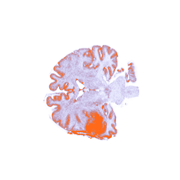
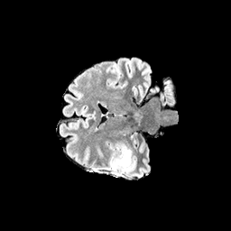

Research QC Overlay
public-ucsd-ptgbm-case
Research use only. This output is a recurrence-risk heatmap in baseline space and is not a clinical dose recommendation.
Case Summary
| Shapei | 256 x 256 x 256 |
|---|---|
| Spacing mmi | 1.0 / 1.0 / 1.0 |
| Brain voxelsi | 1485184 |
| Baseline tumor voxelsi | 5764 |
| Recurrence mask presenti | True |
| Recurrence voxelsi | 592 |
| Recurrence inside baseline tumori | 458 |
| Recurrence outside baseline tumori | 134 (22.64%) |
| Risk map presenti | True |
| Mean risk in recurrencei | 0.891 |
| Mean risk outside recurrencei | 0.294 |
| Top 1% risk overlapi | 56 recurrence voxels in 14853 high-risk voxels; coverage 9.46%; Dice 0.007 |
| Top 5% risk overlapi | 477 recurrence voxels in 74260 high-risk voxels; coverage 80.57%; Dice 0.013 |
| Viewer slicesi | 64 |
Timepoint Context
Baseline MRI
Post-operative, pre-radiotherapy T1c and FLAIR. These are prediction-time inputs.
Baseline tumor mask
Baseline-space tumor mask used as a prediction-time location feature.
Recurrence mask
Later follow-up reviewed label mapped back to baseline space. It is used for training and evaluation only.
Risk heatmap
Model output in baseline space, not a treatment or dose recommendation.
Overlay Controls
Overlay Key
Axial Slice Browser



